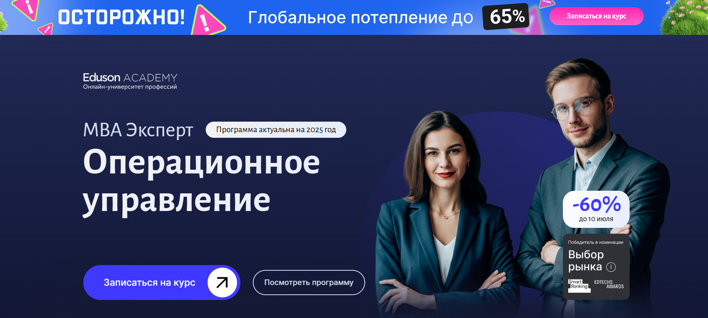
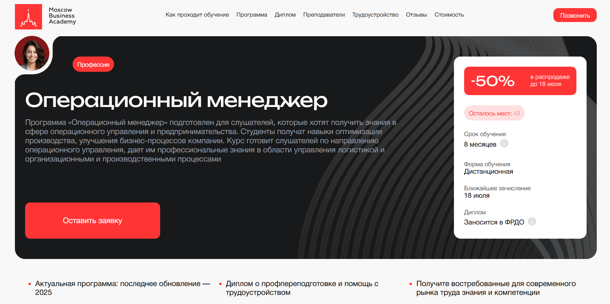
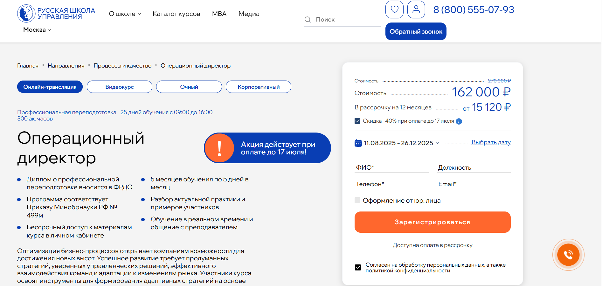
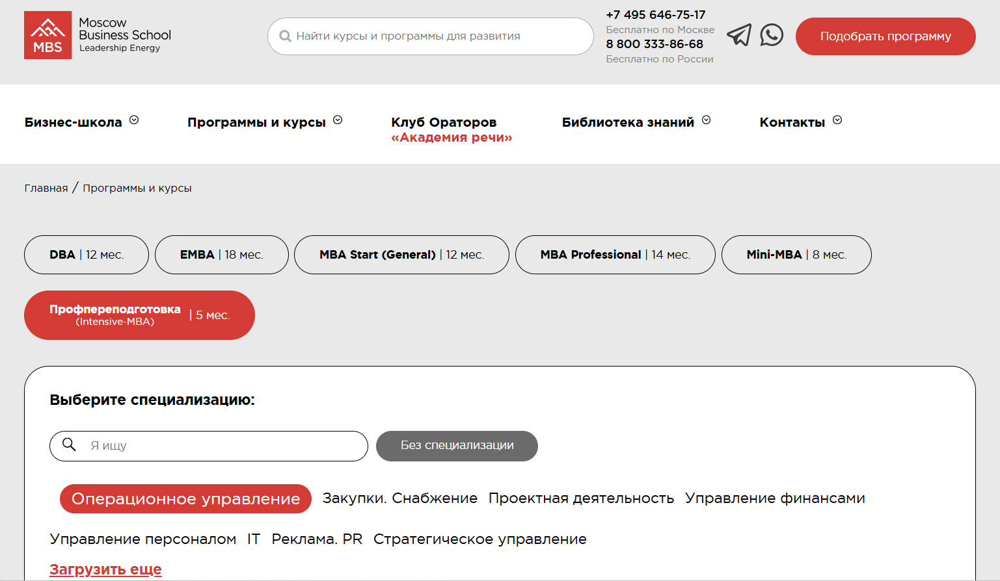
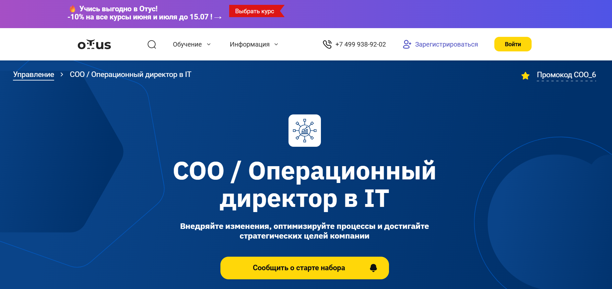
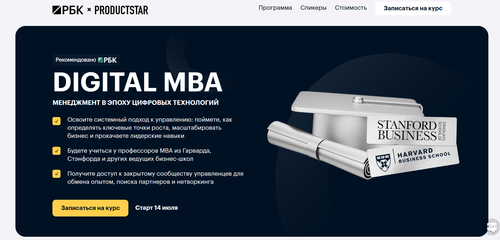
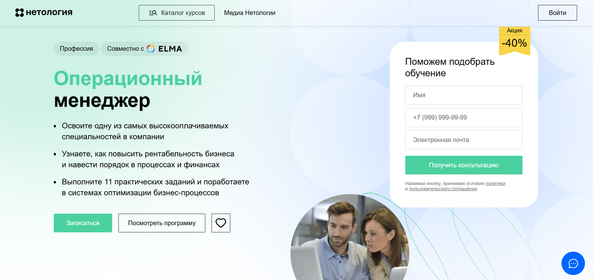
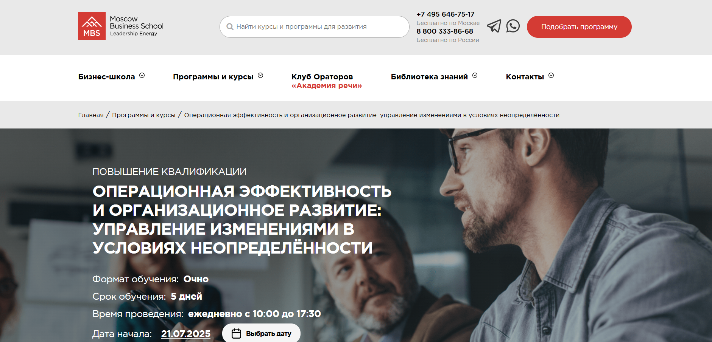
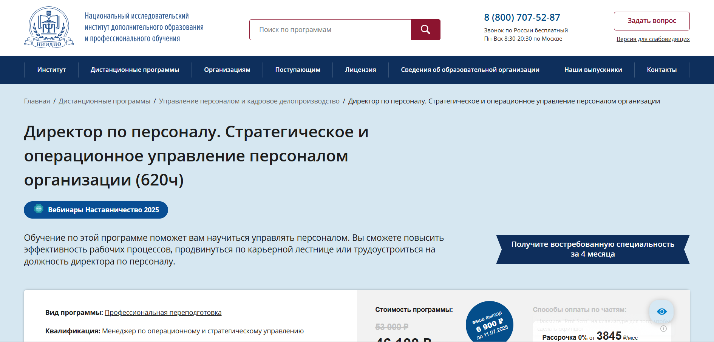
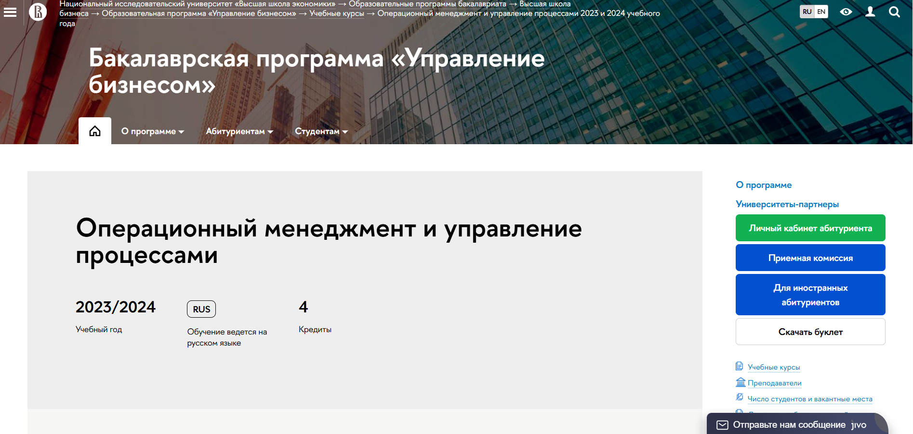

Профессия операционного директора связана с управлением бизнес-процессами, повышением операционной эффективности и оптимизацией ресурсов компании. Чтобы освоить ключевые аспекты операционного менеджмента, повысить квалификацию и развить профессиональные навыки, многие специалисты выбирают дистанционное обучение в удобном формате. Мы составили рейтинг лучших онлайн программ 2025 года для тех, кто стремится пройти профессиональную переподготовку, получить знания в сфере управления операционными процессами и успешно освоить обязанности операционного директора. Эти курсы помогут эффективно управлять проектами, улучшить эффективность бизнеса и подготовят к должности операционного менеджера.
Информация обновлена:
ТОП онлайн-программ обучения на Операционного Директора
- 🏆 MBA Эксперт: Операционное управление – Академия Eduson (по промокоду onlinekursy скидка 🎁 5%)
- 🏆 Операционный директор – Академия Eduson (по промокоду onlinekursy скидка 🎁 5%)
- 🏆 Операционный менеджер – Московская Бизнес Академия
- Операционный директор – Русская Школа Управления
- Операционный директор (СОО). Профессиональная переподготовка – Moscow Business School
- COO / Операционный директор в IT – OTUS
- Менеджмент в эпоху цифровых технологий – ProductStar и РБК
- Профессия Операционный менеджер – Skillbox
- Операционный менеджер – Медиа Нетология
- Операционная эффективность и организационное развитие: управление изменениями в условиях неопределённости – Moscow Business School
- Директор по персоналу. Стратегическое и операционное управление персоналом – АНО «НИИДПО»
- Операционный и стратегический менеджмент – SF Education
- Операционный менеджмент и управление процессами – «Высшая школа экономики»
Отличительные преимущества каждой дистанционной программы обучения по операционному управлению
| № | Курс и школа | Преимущества | |
|---|---|---|---|
| 🥇 | MBA Эксперт: Операционное управление – Академия Eduson | 144 урока, 59+ кейсов, обучение у Адизеса и практиков, пожизненный доступ, актуальный контент на 2025 год | Перейти |
| 🥈 | Операционный директор – Академия Eduson | 320 уроков, 49 кейсов, 50 тренажёров, доступ навсегда, диплом + диплом о прохождении, гибкость графика | Перейти |
| 🥉 | Операционный менеджер – Московская Бизнес Академия | Доступный по цене, диплом в ФРДО, бонусные модули, рассрочка 24 мес, 65% выпускников трудоустроены | Перейти |
| 4 | Операционный директор – Русская Школа Управления | Очно + онлайн, диплом гос. образца, преподаватели с учёными степенями, модульный подход | Перейти |
| 5 | Операционный директор (СОО). Профессиональная переподготовка – Moscow Business School | Обучение + бизнес-игры, доступ ко всем курсам MBS, два формата обучения, активное сообщество | Перейти |
| 6 | COO / Операционный директор в IT – OTUS | IT-специализация, кейсы, работа с продуктами, метрики, защита проекта, карьерная поддержка | Перейти |
| 7 | Менеджмент в эпоху цифровых технологий – ProductStar и РБК | Преподаватели из Гарварда и Стэнфорда, бизнес-семинары, менторинг, диплом, сообщество управленцев | Перейти |
| 8 | Профессия Операционный менеджер – Skillbox | Обучение с нуля, кейсы из Okko, BI и big data, гарантия трудоустройства, гибкий график | Перейти |
| 9 | Операционный менеджер – Медиа Нетология | Доступ к ELMA и Business Studio, коучинг, 36 мес. рассрочки, карьерная поддержка | Перейти |
| 10 | Операционная эффективность и организационное развитие – Moscow Business School | Ускоренное обучение (5 дней), очный формат, преподаватель – практик по lean, бизнес-клуб | Перейти |
| 11 | Директор по персоналу. Стратегическое и операционное управление персоналом – АНО «НИИДПО» | HR-управление + операционный менеджмент, архив 13000+ записей, обучение в приложении | Перейти |
| 12 | Операционный и стратегический менеджмент – SF Education | Самый доступный курс, Trade-in, обучение от экс-VP Goldman Sachs, пожизненный доступ | Перейти |
| 13 | Операционный менеджмент и управление процессами – НИУ ВШЭ | Для студентов ВШЭ, метод A3, практико-ориентированный курс, обучение в рамках программы | Перейти |
1. 🏆 MBA Эксперт: Операционное управление – Академия Eduson

- ✅ Официальный сайт: eduson.academy
- 💸 Цена: 209 196 ₽ (скидка 60%)
- 💳 Рассрочка: 17 433 ₽/мес.,доступна на 12 месяцев без процентов
- 📚 Формат: дистанционное обучение: видеоуроки, тренажёры, бизнес-кейсы, задания, лонгриды
- ⏳ Продолжительность: индивидуальная, зависит от темпа обучения
- 📜 Документ: диплом о профессиональной переподготовке установленного образца
- 📝 Трудоустройство: курс помогает претендовать на повышение или смену должности
- 🔷 Для кого подходит курс: генеральных, операционных директоров, менеджеров, владельцев бизнеса и руководителей подразделений
Особенности:
Программа разработана с учётом реальных задач, с которыми сталкиваются операционные менеджеры в повседневной работе. Она даёт возможность уже во время прохождения курса внедрять улучшения в бизнес-процессы. Дистанционный формат обучения позволяет совмещать обучение с основной занятостью. В курс входят 144 урока, 38 тренажёров, более 59 практических кейсов. Студенты осваивают инструменты анализа и повышения операционной эффективности бизнеса, учатся принимать управленческие решения на основе данных и контролировать ключевые показатели. Обучение проходит под руководством экспертов из крупнейших российских и международных компаний.
Чему учатся студенты:
- Управлять бизнес-процессами и повышать операционную эффективность
- Рационально распределять ресурсы и снижать затраты
- Подбирать и внедрять подходящие инструменты автоматизации
- Разрабатывать и реализовывать стратегию развития
- Формировать команды и применять KPI
- Анализировать финансовое положение компании
- Оценивать риски и управлять изменениями
Преподаватели:
- Ицхак Адизес — мировой эксперт по управлению, профессор Стэнфорда и Колумбийского университета
- Мария Санченко — операционный директор «Интакт», 17+ лет в операционном менеджменте
- Ярослав Малиновский — инвестиционный аналитик, опыт в KPMG и «МегаФон»
- Ринат Мухаметвалеев — экс-коммерческий директор «Перекрёсток», преподавал в МГИМО и ВШЭ
- Сергей Елин — основатель консалтинговой группы «АИП», более 500 реализованных проектов
- Светлана Зубова — экс-менеджер Ozon, Mamsy, Diva, CEO E-COMM.GURU
- Ирина Радюшкина — управляющий партнер Gotomarket.Me, 17+ лет в операционном планировании
- Максим Дорофеев — автор «Джедайских техник», консультант по личной эффективности
Преимущества:
- Фокус на практических навыках и кейсах из реального бизнеса
- Программа включает лучшие практики российских и международных экспертов
- Обучение ведут преподаватели с опытом работы в топовых компаниях
- Возможность выстраивать системную работу бизнеса с первых недель
- Поддержка куратора и доступ к материалам навсегда
- Актуальный контент на 2025 год без устаревшей информации
- Гибкий график позволяет совмещать обучение с работой
- Рассрочка и налоговый вычет делают обучение доступным
Отзывы учеников:
Слушатели отмечают насыщенность программы, отсутствие «воды» и высокий уровень тренажёров. Особенно ценят практическую направленность, актуальные темы и опыт преподавателей. Подчёркивают, что обучение помогает наладить бизнес-процессы, выстроить стратегию и повысить эффективность компании.
Перейти на официальный сайт курса2. 🏆 Операционный директор – Академия Eduson
- ✅ Официальный сайт: eduson.academy
- 💸 Цена: 167 604 ₽ (скидка 60%).
- 💳 Рассрочка: от 13 967 ₽ в месяц, беспроцентная на 12 месяцев, можно оформить онлайн.
- 📚 Формат: дистанционное обучение — 320 уроков, 49 бизнес-кейсов, 50 тренажёров, шаблоны, видеолекции, домашние задания.
- ⏳ Продолжительность: гибкий график, обучение в удобное время, доступ бессрочный.
- 📜 Документ: диплом о профессиональной переподготовке и диплом о прохождении курса.
- 📝 Трудоустройство: подтверждённый рост зарплат и повышение на должность; диплом помогает в карьере.
- 🔷 Для кого подходит курс: руководители, топ-менеджеры, специалисты, желающие повысить квалификацию и освоить профессию операционного менеджера.
Особенности:
Программа сочетает теоретическую базу и глубокую практику, акцентируя внимание на ключевых аспектах операционного менеджмента. Обучение построено вокруг задач реального бизнеса: участники проходят тренажёры, решают кейсы, моделируют процессы, работают с CRM и Power BI. Каждому студенту назначается личный куратор, который сопровождает на протяжении всего курса. Платформа позволяет совмещать работу и обучение, а постоянные обновления программы дают доступ к современным практикам без доплат. По завершению обучения выдаются дипломы, подтверждающие квалификацию в сфере управления операционной эффективностью.
Чему учатся студенты:
- Оптимизировать и внедрять бизнес-процессы по методикам BPMN, Lean и Six Sigma
- Управлять бюджетом, распределять ресурсы, снижать затраты
- Разрабатывать стратегии развития бизнеса и KPI
- Применять цифровые инструменты: Power BI, Excel, Google Sheets, AmoCRM, Битрикс24
- Анализировать отчёты P&L, Cash Flow, Balance Sheet
- Управлять командой, нанимать и развивать руководителей
- Оценивать финансовую эффективность бизнеса
- Автоматизировать операционные процессы и контролировать исполнение задач
Преподаватели:
- Ицхак Адизес — 50+ лет опыта в управлении бизнесом
- Ринат Мухаметвалеев — 20+ лет опыта в трансформации компаний
- Иван Алёхин — 17+ лет в операционном планировании и финансовом управлении
Преимущества:
- Гибкий дистанционный формат обучения без привязки ко времени
- Бессрочный доступ ко всем материалам и обновлениям программы
- 49 бизнес-кейсов и 50 тренажёров для отработки практических навыков
- Поддержка куратора 365 дней в году
- Выдача двух дипломов после окончания курса
- Реальные инструменты для повышения операционной эффективности
- Возможность совмещения с текущей работой
- Развитие профессиональных навыков, востребованных в любой отрасли
Отзывы учеников:
Студенты чаще всего отмечают практичность курса, высокое качество преподавания и поддержку кураторов. Отдельно подчеркивается актуальность материалов, которые можно применять сразу на рабочем месте. Также выпускники говорят об улучшении эффективности бизнес-процессов и росте зарплат после прохождения обучения.
Перейти на официальный сайт курса3. 🏆 Операционный менеджер – Московская Бизнес Академия

- ✅ Официальный сайт: moscow.mba
- 💸 Цена: 116 496 ₽ со скидкой 50%
- 💳 Рассрочка: от 4 854 ₽ в месяц до 24 месяцев, без переплат, первый платеж — через месяц
- 📚 Формат: дистанционный формат: 140 видеоуроков, 14 воркшопов, тесты, индивидуальные задания
- ⏳ Продолжительность: 8 месяцев
- 📜 Документ: диплом о профессиональной переподготовке, вносится в ФРДО
- 📝 Трудоустройство: помощь в подготовке резюме, портфолио, поиске вакансий и прохождении собеседований
- 🔷 Для кого подходит курс: операционным директорам, управленцам, предпринимателям, специалистам по проектам, стремящимся к повышению квалификации
Особенности:
Программа нацелена на освоение ключевых аспектов операционного управления. Обучение проходит полностью онлайн, с доступом ко всем материалам с любого устройства. Курс регулярно обновляется, что позволяет учитывать актуальные требования рынка и современные инструменты анализа и оптимизации. Студенты выполняют задания, приближённые к реальным задачам, что помогает формировать практические навыки. Программа учитывает важность эффективного контроля затрат и повышения операционной эффективности бизнеса. После завершения курсов можно пройти бонусные модули по тайм-менеджменту и моделированию бизнес-процессов. Программа позволяет совмещать обучение с работой и личной жизнью. Студенты получают поддержку кураторов и преподавателей на каждом этапе прохождения обучения.
Чему учатся студенты:
- Анализировать и оптимизировать бизнес-процессы
- Разрабатывать стратегии развития и роста бизнеса
- Управлять командой, сроками, проектами и изменениями
- Работать с инструментами Process Mining, Excel и ELMA
- Внедрять современные подходы к операционному управлению
- Повышать эффективность бизнес-процессов компании
- Разбираться в стратегическом планировании и управлении рисками
Преподаватели:
- Ицхак Пинтосевич — эксперт по личностному росту, автор 15 книг, бизнес-тренер
- Ангелина Шам — кандидат наук, корпоративный бизнес-психолог, автор книг
- Валентина Катаниди — сертифицированный карьерный консультант, более 3500 часов тренингов
Преимущества:
- Профессиональная переподготовка с дипломом, вносимым в ФРДО
- Обновленная программа 2025 года с акцентом на практические кейсы
- 65% выпускников трудоустраиваются в течение трёх месяцев
- Доступ к материалам 24/7 в удобном формате
- Преподаватели — действующие эксперты с реальным опытом
- Гибкий график обучения без отрыва от работы
- Бонусные модули для закрепления полученных навыков
- Возможность вернуть полную стоимость в течение 14 дней
Отзывы учеников:
Выпускники отмечают практическую направленность курса, удобный дистанционный формат и помощь с трудоустройством. Среди плюсов чаще всего выделяют: структурированность материала, компетентных преподавателей и возможность применить знания в реальной работе. Многие подчеркивают, что курс помог им повысить эффективность процессов в их компаниях.
Перейти на официальный сайт курса4. Операционный директор – Русская Школа Управления
- ✅ Официальный сайт: uprav.ru
- 💸 Цена: от 220 000 ₽ до 270 000 ₽ в зависимости от формата
- 💳 Рассрочка: от 18 334 ₽/мес., возможна на 12 месяцев через 12 банков
- 📚 Формат: онлайн-трансляции, видеокурс, очный формат, тесты, кейсы, бессрочный доступ к материалам
- ⏳ Продолжительность: 5 месяцев (по 5 дней в месяц), либо 25 дней очного обучения
- 📜 Документ: диплом о профессиональной переподготовке с внесением в ФРДО
- 📝 Трудоустройство: развитие профессиональных навыков, карьерный рост, повышение эффективности
- 🔷 Для кого подходит курс: специалисты, менеджеры, руководители, желающие освоить профессию операционного менеджера и повысить эффективность бизнеса
Особенности:
Обучение направлено на развитие ключевых компетенций для работы в операционном менеджменте. Программа включает модули, охватывающие аспекты операционного управления, оптимизацию процессов, цифровую трансформацию и стратегическое планирование. Благодаря удобному формату обучения — от онлайн-трансляций до видеокурсов — можно выбрать подходящий график. Бессрочный доступ к материалам помогает повторить важные темы в любое время. Курс сопровождается реальными кейсами, примерами участников и обратной связью от экспертов. В результате студенты получают не только знания, но и навыки, применимые в ежедневной практике.
Чему учатся студенты:
- Управлять бизнес-процессами и достигать стратегических целей
- Оптимизировать работу с персоналом, финансами и ресурсами
- Применять инструменты цифровой аналитики и искусственного интеллекта
- Разрабатывать адаптивные стратегии и внедрять инновации
- Выстраивать экосистемы внутри компании и внедрять технологии
- Анализировать риски и улучшать операционную эффективность
Преподаватели:
- Алёшин Игорь Николаевич — эксперт по бизнес-аналитике и управлению процессами
- Антипин Антон Романович — эксперт по организационному развитию, член ABPMP
- Ященко Владимир Владимирович — к.т.н., доцент, эксперт по стандартам качества, автор 70+ публикаций и 7 патентов
- Семенов Артём Сергеевич — директор по производству, представитель руководства по качеству
Преимущества:
- Программа соответствует приказу Минобрнауки №499м
- Бессрочный доступ к материалам и базе знаний
- Индивидуальный график и гибкий выбор формата
- Погружение в ключевые аспекты операционного менеджмента
- Разбор актуальных кейсов и практика от преподавателей
- Диплом государственного образца с регистрацией в ФРДО
- Помощь в адаптации стратегий и повышении эффективности бизнеса
- Поддержка преподавателей во время всего обучения
Отзывы учеников:
Студенты Русской Школы Управления отмечают сильный преподавательский состав, удобную платформу, актуальность тем и практическую направленность. Особенно выделяют развитие управленческих навыков, доступность материалов и возможность совмещения с работой. Выпускники говорят о росте профессиональных знаний и карьерном продвижении после окончания обучения.
Перейти на официальный сайт курса5. Операционный директор (СОО). Профессиональная переподготовка – Moscow Business School

- ✅ Официальный сайт: mbschool.ru
- 💸 Цена: 139 000 ₽ (по промокоду — 104 250 ₽)
- 💳 Рассрочка: 5 792 ₽/мес на 24 месяца
- 📚 Формат: очное и дистанционное обучение, видеоуроки, аудио, текстовые материалы, вебинары, факультативы, кейсы, тесты
- ⏳ Продолжительность: 5 месяцев
- 📜 Документ: диплом о профессиональной переподготовке
- 📝 Трудоустройство: карьерное консультирование, рекомендации по трудоустройству
- 🔷 Для кого подходит курс: операционные менеджеры, руководители, менеджеры среднего звена, предприниматели, специалисты, желающие освоить профессию операционного директора
Особенности:
Программа помогает получить востребованные профессиональные навыки в управлении бизнес-процессами и освоить ключевые аспекты операционного менеджмента. Доступен дистанционный формат, что позволяет пройти обучение в удобное время. В рамках курса студенты изучают методы повышения операционной эффективности и стратегического управления, участвуют в бизнес-играх и практических заданиях. Обучение сопровождается поддержкой куратора и участием в закрытых форумах. Программа позволяет эффективно выстраивать процессы и реализовывать стратегии развития. Студенты получают доступ ко всем курсам школы без ограничений.
Чему учатся студенты:
- Понимать аспекты операционного управления и оптимизации процессов
- Осваивать инструменты для повышения эффективности бизнес-процессов
- Эффективно управлять ресурсами, командами и проектами
- Применять стратегии операционного консалтинга
- Повышать финансовую эффективность компании
- Разрабатывать стратегии и контролировать показатели
- Применять знания в реальных бизнес-сценариях
Преподаватели:
- Верченко Василий Александрович — кандидат экономических наук, эксперт по коммуникациям и оптимизации бизнес-процессов, бизнес-тренер, провел более 3000 мероприятий
- Кулагин Олег Анатольевич — кандидат технических наук, консультант по стратегическому и операционному менеджменту, специалист по MBO, KPI и BSC
Преимущества:
- Освоение практических навыков в операционном управлении
- Гибкий формат — очное и дистанционное обучение
- Доступ к базе знаний и библиотеке
- Участие в деловом сообществе и закрытых сессиях
- Интенсивная практика через тренинги и бизнес-игры
- Безлимитный доступ к краткосрочным курсам
- Индивидуальное сопровождение от куратора
- Профессиональная переподготовка с дипломом государственного образца
Отзывы учеников:
Выпускники Moscow Business School часто отмечают высокое качество материалов и сильный преподавательский состав. Студенты подчеркивают развитие профессиональных компетенций, полезность практических заданий и возможность применить знания на практике. Отмечают также активные дискуссии и удобный формат обучения, позволяющий совмещать учебу с работой.
Перейти на официальный сайт курса6. COO / Операционный директор в IT – OTUS
- ✅ Официальный сайт: otus.ru
- 💸 Цена обучения: 122 000 ₽.
- 💳 Рассрочка: от 10 166,57 ₽/мес., доступен налоговый вычет 13%.
- 📚 Формат: онлайн обучение, интерактивные вебинары, кейс-задания, проектная работа, записи всех занятий, чат с преподавателями.
- ⏳ Продолжительность: 5 месяцев, 2 занятия в неделю.
- 📜 Документ: удостоверение о повышении квалификации.
- 📝 Трудоустройство: поддержка карьерного трека, размещение резюме, доступ к базе партнеров OTUS.
- 🔷 Для кого подходит курс: для тимлидов, project и product-менеджеров, начинающих и опытных операционных директоров, а также специалистов, переходящих в IT из других отраслей.
Особенности:
Курс создан специально для тех, кто стремится освоить профессию операционного директора в IT и улучшить операционную эффективность компании. Программа направлена на развитие управленческих и стратегических компетенций, включая оптимизацию процессов, контроль ключевых показателей и работу с операционным менеджментом. Участников ждёт активная практика, выполнение кейсов и защита собственного проекта. Поддержка преподавателей-практиков и доступ к сообществу обеспечивают устойчивый профессиональный рост. Дистанционный формат и гибкий график обучения позволяют совмещать курс с работой. Упор сделан на развитие практических навыков и стратегического мышления.
Чему учатся студенты:
- Формировать операционную стратегию компании
- Повышать операционную и финансовую эффективность
- Контролировать бизнес с помощью метрик и KPI
- Декомпозировать стратегию на оперативные планы
- Выстраивать производственные процессы и управлять рисками
- Использовать модели масштабирования и оценки проектов
- Оптимизировать бизнес-процессы и внедрять изменения
- Эффективно взаимодействовать с техническими и продуктовыми командами
Преподаватели:
- Олег Бледнов — Руководитель направления, эксперт в операционном консалтинге
- Михаил Савинов — CTO, технический директор, управляет проектами в IT
- Григорий Чхеидзе — Основатель ITSMJOB, консультант по операционному управлению
Преимущества:
- Обучение у действующих операционных директоров и CTO
- Решение реальных кейсов, основанных на практике
- Доступ к записям и материалам навсегда
- Возможность защитить проект и получить диплом
- Карьерная поддержка: открытые уроки и база вакансий
- Гибкий график: занятия по вечерам дважды в неделю
- Практические навыки, применимые в любом бизнесе
- Сильная методология, акцент на повышение квалификации
Отзывы учеников:
В отзывах чаще всего отмечают высокий уровень практики, полезность кейсов и обратной связи от преподавателей. Студенты подчеркивают рост профессиональных знаний и навыков, актуальность материала и помощь в карьерном развитии. Особенно выделяют проработанность заданий и ценность живых вебинаров с экспертами.
Перейти на официальный сайт курса7. Менеджмент в эпоху цифровых технологий – ProductStar и РБК

- ✅ Официальный сайт: rbc.productstar.ru
- 💸 Цена обучения: от 149 175 ₽ (со скидкой до 37%).
- 💳 Рассрочка: от 6906 ₽/мес. до 24 месяцев от банков-партнеров, от 6 906 ₽ в месяц.
- 📚 Формат: дистанционное обучение, 71 видеоурок, бизнес-семинары, групповые воркшопы, тесты, менторские сессии.
- ⏳ Продолжительность: 247 часов + личные консультации, обновление программы – 2025 год.
- 📜 Документ: диплом о профессиональной переподготовке или фирменный сертификат (в зависимости от тарифа).
- 📝 Трудоустройство: помощь в развитии карьеры, доступ к сообществу управленцев.
- 🔷 Для кого подходит курс: для операционных менеджеров, управленцев среднего звена, специалистов по внедрению процессов и руководителей команд.
Особенности:
Программа создана для тех, кто стремится к повышению операционной эффективности бизнеса и освоению системного подхода в управлении. Участники пройдут обучение у преподавателей Гарварда, Стэнфорда, INSEAD и других мировых бизнес-школ. Акцент сделан на практических навыках, управлении проектами, стратегическом планировании и развитии профессиональных компетенций. В ходе прохождения обучения студенты научатся принимать решения на основе данных, внедрять бизнес-метрики и разрабатывать стратегии роста. Программа предусматривает возможность получить диплом о профессиональной переподготовке, что позволит официально подтвердить освоенные навыки. Удобный график обучения и гибкий формат — всё, чтобы совмещать курс с работой. Присоединение к закрытому сообществу — дополнительный плюс для тех, кто хочет обмениваться опытом и находить единомышленников.
Чему учатся студенты:
- Эффективному управлению командой и бизнес-процессами
- Оценке показателей эффективности и оптимизации процессов
- Финансовому планированию и анализу затрат
- Выстраиванию стратегий и внедрению изменений
- Управлению продажами, продуктами и проектами
- Работе с бизнес-метриками и операционной аналитике
- Публичным выступлениям и переговорам
- Повышению личной эффективности и тайм-менеджменту
Преподаватели:
- Лу Шипли — профессор Гарвардской школы бизнеса
- Игорь Селиванов — зам. генерального директора РБК
- Лисен Стромберг — профессор Стэнфорда
- Энтони Кнопперс — преподаватель MBA, Роттердам
- Моше Коэн — профессор Бостонского университета
- Светлана Ланда — основатель SLAcademy
- Артем Гусев — тренер TEDx, эксперт по публичным выступлениям
Преимущества:
- Обучение от экспертов ведущих бизнес-школ мира
- Практика на кейсах из реального бизнеса
- Доступ к профессиональному сообществу управленцев
- Возможность выбрать ментора и пройти 6 индивидуальных сессий
- Диплом о профессиональной переподготовке для карьерного роста
- Формат дистанционного обучения — удобно совмещать с работой
- Доступ к материалам курса на 3 года
- Подписка РБК и интенсивы от РБК в подарок
Отзывы учеников:
Студенты курса особенно отмечают рост профессиональных навыков, понимание ключевых аспектов операционного управления и улучшение коммуникации с командой. Многие упоминают, что после окончания курса смогли выйти на новую должность, увеличить операционную эффективность своих проектов и освоили новые инструменты для оптимизации бизнес-процессов.
Перейти на официальный сайт курса8. Профессия Операционный менеджер – Skillbox
- ✅ Официальный сайт: skillbox.ru
- 💸 Цена обучения: 136 776 ₽ по акции (вместо 273 552 ₽)
- 💳 Рассрочка: от 5 699 ₽/мес до 24 месяцев
- 📚 Формат: видеолекции, домашние задания, практические кейсы, обратная связь от кураторов
- ⏳ Продолжительность: 6 месяцев
- 📜 Документ: диплом о профессиональной переподготовке с регистрацией в ФИС ФРДО
- 📝 Трудоустройство: помощь в поиске работы или возврат средств
- 🔷 Для кого подходит курс: тем, кто хочет освоить операционный менеджмент с нуля и занять управленческую должность
Особенности:
Эта программа обучения позволяет освоить ключевые аспекты операционного менеджмента и повысить профессиональные навыки в удобном дистанционном формате. Курс подходит для тех, кто стремится внедрять стратегии повышения эффективности бизнес-процессов, научиться анализировать издержки и управлять качеством. Практические задания основаны на кейсах реальных компаний, включая проект по улучшению процессов в Okko. Программа разработана совместно с практиками отрасли, что гарантирует актуальность и применимость знаний.
Чему учатся студенты:
- Определять и оптимизировать операционную деятельность компании
- Анализировать процессы с использованием big data и BI-систем
- Разрабатывать стратегии повышения операционной эффективности
- Управлять проектами и командами, включая удалённые
- Выстраивать цепочки поставок и управлять ресурсами
- Оценивать юнит-экономику и прибыльность бизнеса
- Обнаруживать и устранять узкие места в бизнес-процессах
- Снижать издержки и улучшать качество продукции
Преподаватели:
- Александр Савицкий — директор по управлению эффективностью в международной телекоммуникационной компании, более 10 лет опыта в стратегическом и операционном консалтинге
- Михаил Гейшерик — операционный директор агентства Possible Group
- Павел Булавин — начальник отдела развития данных в банке «Открытие»
Преимущества:
- Погружение в реальные кейсы из бизнеса
- Доступ к курсу и обновлениям навсегда
- Поддержка кураторов с опытом от 5 лет
- Обратная связь в течение 24 часов
- Диплом государственного образца
- Проект в портфолио для демонстрации навыков
- Подходит для совмещения с работой
- Возможность налогового вычета до 13%
Отзывы учеников:
Студенты хвалят курс за насыщенную практику, гибкий график и возможность освоить востребованную профессию. Отмечают, что обучение помогает системно выстраивать бизнес-процессы и уверенно выполнять задачи операционного менеджера даже без профильного опыта.
Перейти на официальный сайт курса9. Операционный менеджер – Медиа Нетология

- ✅ Официальный сайт: netology.ru
- 💸 Цена: от 126 600 ₽ (со скидкой 40%)
- 💳 Рассрочка: 3 701 ₽/мес на 36 месяцев, без переплат
- 📚 Формат: видеолекции, воркшопы, домашние задания с проверкой, тесты, доступ к системам ELMA и Business Studio
- ⏳ Продолжительность: 9 месяцев
- 📜 Документ: диплом о профессиональной переподготовке
- 📝 Трудоустройство: карьерные консультации, помощь с резюме, возможное собеседование в ELMA
- 🔷 Для кого подходит курс: для тех, кто хочет освоить операционное управление, повысить квалификацию и вырасти до уровня операционного директора
Особенности:
Программа даёт комплексные знания в ключевых аспектах операционного менеджмента и позволяет освоить навыки управления эффективностью бизнес-процессов. Курс проходит в дистанционном формате, что удобно для совмещения с работой. В процессе прохождения обучения студенты погружаются в реальные кейсы и практикуются на современных инструментах. Полученный опыт охватывает финансовый менеджмент, стратегическое планирование, управление персоналом и оптимизацию бизнес-процессов. Курс включает поддержку наставников, напоминания о дедлайнах через приложение и подробные обратные связи по заданиям. После окончания курса слушатели получают диплом установленного образца. Программа идеально подойдёт тем, кто хочет перейти на должность операционного менеджера или повысить операционную эффективность текущих процессов.
Чему учатся студенты:
- Анализировать и оптимизировать бизнес-процессы компании
- Внедрять инструменты контроля затрат и повышения эффективности
- Разрабатывать операционную стратегию и оценивать её реализацию
- Проводить аудит HR-систем и управлять человеческими ресурсами
- Работать с системами ELMA и Business Studio
- Применять SWOT-анализ и строить стратегические карты
- Создавать карты процессов и формировать иерархии
Преподаватели:
- Елена Иванова — независимый консультант по управлению
- Маргарита Нижельская — руководитель по системной аналитике, МегаФон
- Дмитрий Орлов — старший коуч команд, банк ВТБ
- Георгий Ржавин — руководитель BPM-направления, GlowByte Consulting
- Альфия Ибрагимова — эксперт Process Mining, GlowByte
- Илья Кананыкин — директор по развитию, EKF
- Дмитрий Опарин — директор по стратегическим проектам, ELMA
- Илья Лукин — руководитель направления в «Газпром нефть»
- Инга Орлова — организационный консультант, executive коуч
- Ольга Ларкина — карьерный и executive коуч, бизнес-тренер
- Светлана Гончар — эксперт по организационному развитию
- Иван Никонов — руководитель направления POS-кредитования, Яндекс Касса
- Алексей Романец — предприниматель, антикризисный управляющий
Преимущества:
- Освоение одной из самых востребованных специальностей в управлении
- Практика на реальных кейсах и проектах студентов
- Доступ к профессиональному софту: ELMA и Business Studio
- Дистанционный формат обучения — гибкий график занятий
- Возможность карьерного роста до операционного директора
- Поддержка преподавателей и карьерных консультантов
- Программа разработана с учётом актуальных запросов рынка
- Обратная связь по домашним заданиям и практическим проектам
Отзывы учеников:
Студенты чаще всего отмечают удобный дистанционный формат, практическую направленность курса и актуальность изучаемых тем. Многим помогает реальный опыт преподавателей и возможность получить поддержку в трудоустройстве. Также высоко оценивают доступ к современным инструментам и разбор бизнес-кейсов.
Перейти на официальный сайт курса10. Операционная эффективность и организационное развитие: управление изменениями в условиях неопределённости – Moscow Business School

- ✅ Официальный сайт: mbschool.ru
- 💸 Цена обучения: 71 900 ₽
- 💳 Рассрочка: доступна 2 996 ₽/мес, при заявке уточняйте условия
- 📚 Формат: очные занятия, авторские материалы, кофе-паузы, итоговые проекты
- ⏳ Продолжительность: 5 дней (ежедневно с 10:00 до 17:30)
- 📜 Документ: удостоверение о повышении квалификации или сертификат Moscow Business School
- 📝 Трудоустройство: повышение шансов на карьерный рост, особенно для операционных директоров
- 🔷 Для кого подходит курс: операционные менеджеры, специалисты по организационному развитию, руководители проектов и управленцы среднего звена
Особенности:
Программа помогает развивать ключевые навыки в управлении операциями и внедрении изменений. Студенты освоят практические подходы, которые повышают эффективность бизнес-процессов и позволяют управлять проектами в условиях неопределённости. Курс создан с акцентом на профессиональную переподготовку и развитие компетенций в области операционного менеджмента. Обучение проходит в удобном формате, а после окончания участники получают официальный документ. Участие в программе может стать шагом к высокооплачиваемой должности операционного директора и поможет улучшить финансовую эффективность компании.
Чему учатся студенты:
- Анализу бизнес-модели и оптимизации затрат
- Построению эффективной организационной структуры
- Реинжинирингу процессов и повышению операционной эффективности
- Разработке инициатив по улучшению бизнес-процессов
- Управлению персоналом через систему KPI
- Использованию инструментов бережливого производства
- Аудиту управленческих систем
Преподаватели:
- Набоков Анатолий Борисович — кандидат технических наук, бизнес-тренер, эксперт по операционному управлению, внедрению lean-технологий и оптимизации производственных процессов
Преимущества:
- Фокус на развитии профессиональных навыков в операционном консалтинге
- Обучение ведёт опытный практик с высокой экспертизой
- Программа сочетает теорию с практическими заданиями и кейсами
- Возможность применения полученных знаний сразу после прохождения курса
- Поддержка после обучения — материалы курса отправляются на e-mail
- Участие в закрытом бизнес-клубе Moscow Business School
- Подходит для профессиональной переподготовки и карьерного роста
Отзывы учеников:
Выпускники отмечают системный подход к обучению, практическую направленность и удобный график обучения. Особенно хвалят профессиональный уровень преподавателя и возможность пересмотра операционных задач под новым углом. Студенты считают, что курс действительно помогает повысить операционную эффективность и управлять бизнес-процессами эффективнее.
Перейти на официальный сайт курса11. Директор по персоналу. Стратегическое и операционное управление персоналом — АНО «НИИДПО»

- ✅ Официальный сайт: niidpo.ru
- 💸 Цена: 46 100 ₽ (скидка 6 900 ₽)
- 💳 Рассрочка: 0% на 12 месяцев от 3 845 ₽/мес, без первого платежа
- 📚 Формат: дистанционное обучение, видеолекции, вебинары, презентации, тесты, задания, архив 13000+ записей
- ⏳ Продолжительность: 18 недель (4 месяца)
- 📜 Документ: диплом о профессиональной переподготовке с присвоением квалификации "менеджер по операционному и стратегическому управлению"
- 📝 Трудоустройство: диплом признается работодателями и аттестационными комиссиями, подходящий для трудоустройства и карьерного роста
- 🔷 Для кого подходит курс: начинающим и опытным кадровикам, специалистам в сфере HR, руководителям, желающим управлять персоналом
Особенности:
Программа ориентирована на освоение операционного менеджмента и стратегического планирования в HR. Участники изучают ключевые аспекты управления персоналом, включая оптимизацию бизнес-процессов и внедрение изменений. Дистанционный формат и гибкий график обучения позволяют совмещать курс с работой. После успешного прохождения курса студенты получают бессрочный доступ к учебным материалам. Особое внимание уделяется операционной эффективности, управлению затратами и повышению эффективности бизнес-процессов. Возможность изучать реальные кейсы и участвовать в онлайн-вебинарах делает обучение максимально приближенным к практике. Это обучение позволяет освоить навыки, необходимые для повышения квалификации и карьерного роста.
Чему учатся студенты:
- Разрабатывать стратегии управления персоналом
- Создавать структуру HR-отдела и контролировать его деятельность
- Управлять корпоративной культурой и внутренними коммуникациями
- Осуществлять подбор, адаптацию и оценку персонала
- Определять потребности в обучении и оценивать эффективность программ
- Формировать HR-бренд и управлять бюджетом кадровой службы
- Разрабатывать социальную политику предприятия
Преподаватели:
- Хоменко Наталья Викторовна — HR бизнес-партнер, эксперт в управлении персоналом
- Демешко Марина Анатольевна — преподаватель, тренер, директор по персоналу
- Ковалева Клавдия Александровна — эксперт в нормировании труда, преподаватель
Преимущества:
- Диплом государственного образца, действующий по всей России
- Бессрочный доступ к материалам после окончания обучения
- Вебинары с сертификатами и доступ к архиву 13000+ записей
- Дистанционный формат без необходимости посещать учебный центр
- Возможность совмещать обучение с работой
- Обучение на образовательной платформе и в мобильном приложении
- Курс соответствует профстандарту "Специалист по управлению персоналом"
- Поступление без вступительных испытаний и опыта
Отзывы учеников:
Студенты чаще всего отмечают удобный дистанционный формат, практическую направленность курса, актуальность тем, полезные кейсы и профессиональный подход преподавателей. Отзывы подчеркивают рост профессиональных навыков и возможность применения знаний в реальной работе.
Перейти на официальный сайт курса12. Операционный и стратегический менеджмент — SF Education
- ✅ Официальный сайт: sf.education
- 💸 Цена обучения: от 20 988 ₽ (со скидкой до 65%).
- 💳 Рассрочка: беспроцентная рассрочка от 1 166 ₽ в месяц на 18 месяцев, первый платеж через месяц.
- 📚 Формат: видеолекции, домашние задания, кейсы, тестирования, вебинары, бонусные уроки.
- ⏳ Продолжительность: 30 уроков — 29 часов, плюс 3 бонусных урока.
- 📜 Документ: удостоверение установленного образца о профессиональной переподготовке.
- 📝 Трудоустройство: способствует карьерному росту в управлении и операционном консалтинге.
- 🔷 Для кого подходит курс: для операционных директоров, стратегов, менеджеров, специалистов, стремящихся повысить квалификацию в области операционного и стратегического управления.
Особенности:
Программа охватывает ключевые аспекты операционного менеджмента и стратегического развития бизнеса. В обучении используется дистанционный формат с постоянным доступом к материалам. Участники курса изучают методы оптимизации бизнес-процессов, операционные стратегии и финансовые модели. Обучение построено на кейсах, фреймворках и практических заданиях, что помогает слушателям овладеть профессиональными навыками и эффективно применять их в рабочих задачах. Подходит для тех, кто хочет повысить эффективность бизнеса и развить управленческие компетенции. В программе предусмотрены консультации, обратная связь и помощь в разборе кейс-интервью. После окончания обучения студенты получают документ, котирующийся в СНГ.
Чему учатся студенты:
- Анализировать конкурентную среду и находить конкурентные преимущества
- Создавать и внедрять стратегии развития с учетом финансовых моделей
- Повышать операционную эффективность компании
- Применять фреймворки и гипотезы в управленческом консалтинге
- Готовиться к кейс-интервью и решать практические кейсы
- Осваивать специфику операционного консалтинга и методы реализации
Преподаватели:
- Влас Лёзин — ex-Vice President Goldman Sachs (7 лет), Wells Fargo (2 года), прошёл путь от стажера до VP в Нью-Йоркском офисе
Преимущества:
- Пожизненный доступ ко всем материалам и обновлениям
- Онлайн-обучение в гибком графике под любые нагрузки
- Документ о профессиональной переподготовке с юридической силой
- Практическая направленность с кейсами и консалтинговыми инструментами
- Подходит для профессионального роста и смены должности
- До 70% экономии по программе Trade-In
- Поддержка от экспертов и подарки от партнёров курса
- Доступен налоговый вычет 13% на обучение
Отзывы учеников:
Студенты чаще всего отмечают удобный дистанционный формат, высокую квалификацию преподавателя и практическую пользу курса. Многие подчеркивают, что освоили новые навыки, которые помогают эффективно управлять командой и бизнес-процессами. Часто хвалят гибкий график обучения и возможность применять знания сразу в работе.
Перейти на официальный сайт курса13. Операционный менеджмент и управление процессами – Национальный исследовательский университет «Высшая школа экономики»

- ✅ Официальный сайт: hse.ru
- 💸 Цена: бесплатно для студентов образовательной программы «Управление бизнесом»
- 💳 Рассрочка: не требуется
- 📚 Формат: очные занятия, тесты, кейсы, проект A3, экзаменационный мини-кейс
- ⏳ Продолжительность: 2 модуля, 2-й курс обучения
- 📜 Документ: академическая аттестация в рамках основной образовательной программы
- 📝 Трудоустройство: способствует росту профессиональных навыков и повышению эффективности в будущей деятельности
- 🔷 Для кого подходит курс: для студентов, осваивающих специальность в сфере управления бизнесом и стремящихся освоить ключевые аспекты операционного менеджмента
Особенности:
Программа позволяет студентам понять и применять эффективные стратегии в операционном управлении. Через реальные кейсы, проектную работу и тестирование слушатели осваивают методы повышения эффективности бизнес-процессов. Обучение помогает развить критическое мышление, улучшить навыки командной работы и научиться анализировать процессы в компаниях различных сфер — от производства до IT. Курс не ограничивается производственным подходом — студенты погружаются в аспекты операционного консалтинга, цифровизации и внедрения изменений. В процессе обучения применяется метод А3, акцент делается на практических навыках и операционных улучшениях.
Чему учатся студенты:
- Определять и анализировать бизнес-процессы
- Строить карты потока создания ценности
- Разрабатывать операционные стратегии
- Использовать инструменты повышения операционной эффективности
- Понимать влияние цифровых технологий на бизнес
- Предлагать мероприятия по оптимизации процессов
- Работать с методами A3 и решать операционные задачи
Преподаватели:
- Андреева Катарина Владимировна — специалист в сфере операционного управления
- Баев Григорий Олегович — авторитет в области операционных процессов
- Громова Елизавета Олеговна — преподаватель с опытом бизнес-аналитики
- Иванова Анастасия Владимировна — эксперт в области качества и оптимизации
- Нечипоренко Мария Владиславовна — занимается исследованием операционной эффективности
- Сикачев Алексей Олегович — практик операционного менеджмента и консалтинга
Преимущества:
- Фокус на реальных кейсах и проектной работе
- Освоение навыков, востребованных у операционных директоров
- Поддержка командной работы и развитие управленческих компетенций
- Возможность освоить метод A3 и инструменты анализа бизнес-процессов
- Развитие критического мышления и способности управлять изменениями
- Подходит для карьерного роста и повышения квалификации
- Интеграция современных цифровых подходов к управлению
- Программа реализуется ведущим университетом страны
Отзывы учеников:
Студенты отмечают насыщенность курса, большое количество практических заданий и вовлеченность преподавателей. Часто подчеркивают пользу проектного подхода и развитие навыков, необходимых для успешной реализации операционной деятельности. Программа помогает лучше понять, как повысить эффективность бизнеса и подготовиться к работе в роли операционного менеджера.
Перейти на официальный сайт курсаКто такой операционный директор?
Операционный директор (Chief Operating Officer, COO) — это один из ключевых руководителей компании, отвечающий за повседневную операционную деятельность организации. Он подчиняется непосредственно генеральному директору (CEO) и обеспечивает эффективную реализацию стратегических целей компании.
COO — это связующее звено между стратегическим видением и практической реализацией бизнес-процессов. Он координирует работу всех отделов, контролирует выполнение задач, отвечает за продуктивность, оптимизацию процессов и результативность команды.
Что делает операционный директор и чем занимается?
Обязанности операционного директора зависят от специфики бизнеса, но в целом они включают:
- Управление внутренними операциями компании: логистика, производство, финансы, HR, IT.
- Разработка и внедрение бизнес-процессов для повышения эффективности.
- Контроль выполнения операционных целей и KPI.
- Координация работы руководителей подразделений.
- Участие в стратегическом планировании компании.
- Риск-менеджмент и кризисное управление.
COO — это практик, который делает так, чтобы компания работала как слаженный механизм.
Что должен знать и уметь COO?
Для успешной работы на позиции операционного директора важно обладать широким спектром знаний и навыков:
- Глубокое понимание всех бизнес-процессов: от производства до продаж.
- Умение анализировать данные и принимать стратегические решения.
- Лидерские качества, способность вдохновлять и управлять командами.
- Навыки управления проектами и изменениями.
- Опыт в автоматизации процессов и внедрении IT-решений.
- Финансовая грамотность и способность планировать бюджеты.
Важно также быть гибким, стрессоустойчивым и обладать высокой степенью ответственности.
Востребованность и зарплаты операционных директоров (COO) в России в 2025 году
Спрос на опытных операционных директоров в России продолжает расти, особенно в сферах IT, логистики, производства, ритейла и e-commerce. Компании стремятся к оптимизации процессов и снижению издержек, что делает роль COO особенно значимой.
По данным рекрутинговых агентств:
- Зарплаты операционных директоров в Москве в 2025 году составляют от 300 000 до 800 000 рублей в месяц.
- В регионах — от 180 000 до 450 000 рублей.
- В крупных международных компаниях — возможны бонусы, опционы и годовые премии.
Востребованность профессии подтверждается и тем, что многие компании создают отдельную позицию COO, выделяя ее из функций CEO.
Как стать COO и где учиться?
Путь к позиции COO, как правило, проходит через опыт в управлении и развитие лидерских компетенций. Для этого:
- Получите высшее образование в области менеджмента, экономики или технических наук.
- Пройдите дополнительное обучение — MBA, Executive MBA, курсы по стратегическому управлению и бизнес-процессам.
- Работайте в управленческих позициях среднего звена: руководитель отдела, менеджер проекта, директор департамента.
- Постепенно развивайте компетенции в управлении командой, финансами и операциями.
Кому подходит профессия операционного директора (COO)?
Эта профессия подойдет тем, кто:
- Обладает системным мышлением и любит выстраивать процессы.
- Способен принимать быстрые решения и брать ответственность.
- Умеет договариваться и управлять разными типами людей.
- Хочет расти до топ-менеджмента или даже CEO.
Если вы хотите влиять на бизнес и видеть результат своих действий — профессия COO может стать идеальным выбором.
Перспективы карьеры для COO
Операционный директор — это не финальная точка, а ступень в карьерной лестнице. Чаще всего COO становится генеральным директором или партнером компании. Также возможен переход в международные корпорации или запуск собственного бизнеса.
Заключение
Операционный директор — это лидер, стратег и организатор в одном лице. В условиях растущей конкуренции и цифровизации бизнеса эта профессия приобретает всё большую значимость. Если вы стремитесь к высоким результатам и готовы брать на себя ответственность за процессы — должность COO открывает большие возможности как в российском, так и в международном бизнесе.
Что такое обучение на операционного директора?
Обучение на операционного директора — это специализированная программа повышения квалификации, направленная на развитие профессиональных навыков, связанных с эффективным управлением операционными процессами в компании. Оно охватывает ключевые аспекты операционного менеджмента, включая финансовый менеджмент, оптимизацию бизнес-процессов, контроль затрат и разработку стратегий.
Какие форматы обучения доступны для COO?
Современные программы обучения операционных директоров предлагают различные форматы обучения: дистанционное обучение, очные курсы, смешанные программы. Дистанционный формат популярен благодаря удобному графику обучения и доступу к материалам 24/7. Это позволяет проходить обучение без отрыва от работы.
Какие темы охватываются в курсах по операционному менеджменту?
Курсы операционного директора охватывают такие темы, как управление ресурсами, стратегическое планирование, внедрение бизнес-процессов, контроль качества, анализ данных, финансовое планирование, показатели эффективности и инструменты оптимизации.
Какие навыки получит слушатель после прохождения курсов?
После успешного прохождения обучения студенты освоят навыки эффективного управления, научатся внедрять современные бизнес-процессы, оптимизировать операционную деятельность, снижать издержки и повышать эффективность бизнеса.
Как обучение на COO помогает бизнесу?
Программы обучения операционного директора направлены на повышение эффективности бизнес-процессов, оптимизацию ресурсов, контроль затрат и развитие стратегического управления, что в итоге помогает росту бизнеса и укрепляет позиции компании на рынке.
Можно ли совмещать обучение с работой?
Да, большинство программ повышения квалификации предусматривают удобный формат с гибким графиком обучения. Дистанционные курсы и онлайн обучение позволяют совмещать профессиональную деятельность с получением практических знаний.
Какие существуют программы профессиональной переподготовки на операционного директора?
На рынке представлены программы профессиональной переподготовки, которые включают в себя теоретические модули и практические задания по операционному менеджменту, реализации стратегий, контролю качества и управлению проектами. Эти программы позволяют освоить профессию операционного директора с нуля. В нашей статье мы отразили самые популярные дистанционные программы обучения на COO.
Какие документы получают слушатели после окончания обучения?
После успешного прохождения курсов и окончания обучения студенты получают дипломы или сертификаты, подтверждающие их профессиональные квалификации и право на занятие должности операционного директора.
Как обучение помогает в карьерном росте операционного диреткора?
Полученные практические навыки и профессиональные знания позволяют операционным менеджерам повышать эффективность своей работы, занимать более высокие должности, участвовать в разработке стратегий и управлять ключевыми процессами в компании.
Какие преподаватели ведут обучение на курсах для COO?
Обучение операционного директора проводят эксперты операционного консалтинга, топ-менеджеры, специалисты по финансовому и стратегическому управлению. Они делятся практическим опытом, реальными кейсами и методами улучшения бизнес-процессов.
Сколько времени занимает прохождение обучения?
Сроки обучения зависят от формата курса и уровня подготовки. В среднем, программы повышения квалификации занимают от 1 до 6 месяцев. Некоторые дистанционные форматы можно пройти в более короткие сроки благодаря интенсивному графику.
Как выбрать подходящий курс?
Выбор зависит от ваших целей: переподготовка, повышение квалификации или освоение новой профессии. Важно обратить внимание на программу курса, график обучения, доступ к материалам и отзывы студентов, которые уже прошли обучение.
Какие компетенции развивает обучение на операционного директора?
Программа обучения развивает управленческие навыки, стратегическое мышление, планирование ресурсов, управление командой, анализ показателей эффективности и навыки внедрения изменений.
Можно ли обучиться онлайн?
Да, дистанционное обучение позволяет проходить курсы онлайн, получая доступ к образовательным платформам, лекциям, практическим заданиям и поддержке преподавателей. Это особенно удобно для тех, кто совмещает обучение с работой.
Повышают ли обучение и курсы операционного директора эффективность бизнеса?
Безусловно. Обучение операционных директоров направлено на повышение эффективности, оптимизацию процессов, улучшение качества и снижение затрат. Все это способствует улучшению операционной деятельности и росту бизнеса.
Какие ключевые показатели изучают в процессе обучения?
Слушатели изучают ключевые показатели эффективности (KPI), методы их анализа и оптимизации. Это помогает эффективно управлять ресурсами, контролировать затраты и принимать управленческие решения, способствующие достижению стратегических целей.
------------------------------------------------
Реклама. Информация о рекламодателе по ссылкам в статье.